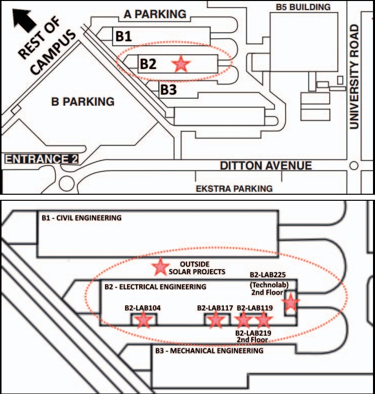
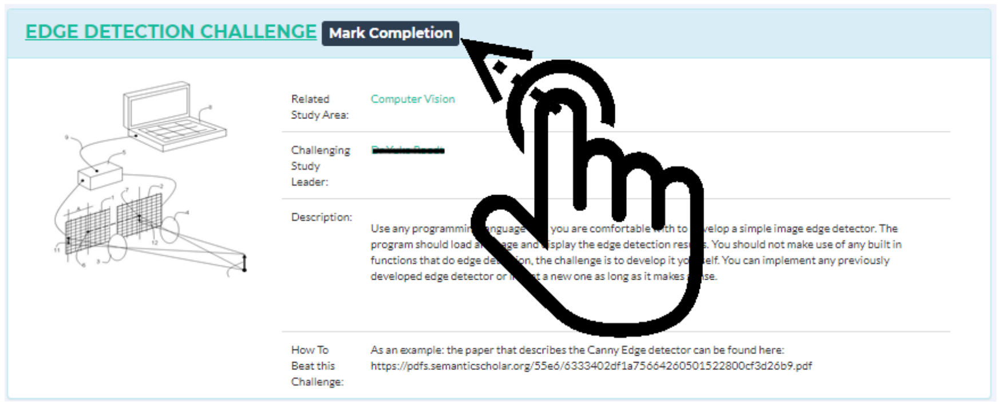

I have spent many years working on a variety of research projects, predominantly in Serious Games and Technology Education, but also touching on Computer Science, Artificial Intelligence and Electronic Engineering.

This was the backbone system that I used extensively during my PhD. It was a gamified system with a number of sub-systems which are documented on other pages that guided the students through their final year capstone projects in Electronic Engineering.

As part of my PhD, while gamifying the capstone projects module, I also developed a system for the implementation of Location Based Games which was used at the University of Johannesburg, and afterwards at a number of conferences.

To gamify the process of project allocations while also creating a more fair and transparent system I developed the Tender Game over a number of iterations, and made heavy use of the Stable Marriage Algorithm including indifference.

To further drive engagement and introduce additional learnign opportunities during the course of the year, and to support the other gamified systems, I created a Challenge-based system that was inspired by the Superbetter approach that was popularised by Jane McGonigal.